(в системе единиц СИ)
где H – напряженность магнитного поля, B – индукция магнитного поля, m0 = 4p ∙ 10-7 В ∙ сек/А ∙ м = 4p ∙ 10-7 Гн/м – магнитная постоянная [11].
Устройства и установки для генерации сильных импульсных магнитных полей
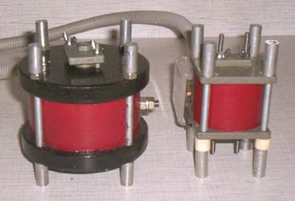
1. Введение
К сильным магнитным полям можно условно отнести поля, индукция которых находится в диапазоне 5 ... 100 Тл (50 ... 1000 кГс), а к сверхсильным - поля с индукцией больше 100 Тл (больше 1 МГс) [17]. Классификация обусловлена следующими, скорее, затратными по своей сущности соображениями. Постоянные магнитные поля с индукцией до 5 Тл можно получать с помощью сравнительно недорогих электромагнитов с медными обмотками и стальными сердечниками. При получении постоянных магнитных полей с большей индукцией затраты существенно возрастают, например, приходится использовать сверхпроводящие и гибридные электромагниты. Импульсные магнитные поля с амплитудой индукции 5 ... 100 Тл могут быть получены также не слишком дорогими методами, причем многократно с помощью неразрушаемых соленоидов. Генерация импульсных магнитных полей с амплитудой индукции больше 100 Тл носит, как правило, одноразовый характер и сопровождается частичным разрушением установки, что, конечно, ведет к росту затрат.
В таблице 1.1 указаны некоторые лаборатории, которые занимаются генерацией, изучением и применением сильных и сверхсильных постоянных и импульсных магнитных полей, а также их достижения [1].
Таблица 1.1. Лаборатории сильных и сверхсильных магнитных полей, их достижения и возможности.
| Местоположение | Название | Тип магнитного поля | Рекорд (магнитная индукция, диаметр проходного отверстия) | Рабочие величины (без разрушения установки) |
| Франция, Гренобль (France, Grenoble) | Laboratoire National des Champs Magnetiques Intenses (DC-field facility) | Постоянное | 37 Тл, 34 мм | |
| Франция, Тулуза (France, Toulouse) | Laboratoire National des Champs Magnetiques Intenses (pulsed-field facility) | Импульсное | 98.8, 8 мм 209 Тл, 8 мм (с разрушением) |
98.8 Тл |
| Голландия, Неймеген (Netherlands, Nijmegen) | High Field Magnet Laboratory | Постоянное | 38 Тл, 32 мм | |
| Германия, Дрезден (Germany, Dresden) | Dresden High Magnetic Field Laboratory (Hochfeld-Magnetlabor Dresden) | Импульсное | 95.6 Тл, 16 мм | |
| США, Таллахасси (USA, Tallahassee) | National High Magnetic Field Laboratory (DC-field facility) | Постоянное | 45 Тл, 32 мм (гибридный электромагнит) | 45 Тл |
| США, Гейнсвилл (USA, Gainesville) | National High Magnetic Field Laboratory (high-B/T facility) | Постоянное | 16.5 Тл (при 0.4 мК) | |
| США, Лос-Аламос (USA, Los Alamos) | National High Magnetic Field Laboratory (pulsed-field facility) | Импульсное | 100.7 Тл, 10
мм 240 Тл, 8 мм (с разрушением) |
100.7 Тл |
| Китай, Ухань (China, Wuhan) | Wuhan National High Magnetic Field Center | Импульсное | 90.6 Тл, 12 мм | 90.6 Тл |
| Китай, Хэфей (China, Hefei) | Chinese High Magnetic Field Laboratory | Постоянное | 40 Тл, 32 мм (гибридный электромагнит) | 40 Тл |
| Япония, Касива (Japan, Kashiwa) | International Megagauss Science Laboratory | Импульсное | 75 Тл, 17 мм 250 Тл, 8 мм (с разрушением) |
86 Тл |
| Япония, Сэндай (Japan, Sendai) | High Field Laboratory for Superconducting Materials | Постоянное | 30 Тл, 32 мм
(гибридный электромагнит) 24.6 Тл, 52 мм (сверхпроводящий электромагнит) |
|
| Япония, Осака (Japan, Osaka) | Center for Advanced High Magnetic Field Science | Импульсное | 60 Тл | |
| Япония, Цукуба (Japan, Tsukuba) | Tsukuba Magnet Laboratory | Постоянное | 32 Тл, 52 мм
(гибридный электромагнит) 35 Тл, 30 мм (гибридный электромагнит) |
35 Тл |
Работа и достижения вышеприведенных лабораторий обеспечиваются и поддерживаются финансовой и технологической мощью государственных учреждений. В то же время вполне возможно изучение и использование сильных и сверхсильных магнитных полей и в существенно стесненных условиях, конечно, на более низком, но, тем не менее, вполне впечатляющем уровне. Ниже приведены примеры рабочих устройств и установок, предназначенных для получения сильных импульсных магнитных полей.
2. Малогабаритный импульсный электромагнит (ИЭМ) с проходным отверстием диаметром 12 мм и высотой рабочей зоны от 1 до 40 мм (амплитуда магнитной индукции в рабочей зоне до 10 Тл)
Для получения импульсного магнитного поля длительностью до 20 миллисекунд с амплитудой индукции до 10 Тл разработан ИЭМ, конструкция которого показана на рис. 2.1, а внешний вид - на рис. 2.2. Изначально ИЭМ предназначался для проведения исследовательских работ по изучению влияния напряженности намагничивающего поля на величину остаточной намагниченности образцов постоянных редкоземельных магнитов с высокой коэрцитивной силой и их температурную стабильность, но может быть использован и в иных целях.
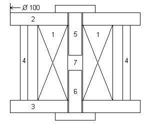
Рис. 2.1. Конструкция ИЭМ для генерации импульсных магнитных полей длительностью до 20 мс с амплитудой индукции до 10 Тл: 1 - цилиндрический соленоид (медная обмотка), 2 - верхняя крышка (сталь), 3 - нижняя крышка (сталь), 4 - цилиндрический корпус (сталь), 5 - верхний полюсной наконечник (сталь), 6 - нижний полюсной наконечник (сталь), 7 - рабочая зона (воздух).
ИЭМ состоит из цилиндрического соленоида (1) с проходным отверстием диаметром 12 и высотой 40 мм, установленного в цилиндрическом стальном корпусе (4). Соленоид предварительно был рассчитан с помощью программ Coil [2], dTWire [3] и UNI [6]. Сверху и снизу корпус (4) закрыт крышками (2, 3), стянутыми между собой шпильками. В отверстия крышек, совмещенные с проходным отверстием соленоида, при необходимости могут быть вставлены с использованием калиброванных прокладок полюсные наконечники (5, 6). Внутри соленоида имеется рабочая зона (7), в которой и создается импульсное магнитное поле. Размеры рабочей зоны: диаметр до 12 мм, высота от 1 мм (полюсные наконечники установлены без прокладок) до 40 мм (полюсные наконечники отсутствуют). Габариты ИЭМ: диаметр не более 105 мм, высота не более 120 мм. Масса ИЭМ не более 3 кг.
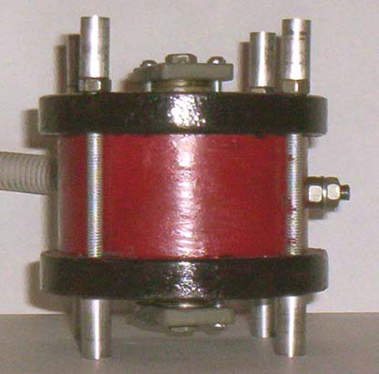
Рис. 2.2. ИЭМ с проходным отверстием диаметром 12 мм и высотой рабочей зоны от 1 до 40 мм для генерации импульсных магнитных полей длительностью до 20 мс с амплитудой индукции до 10 Тл (внешний вид).
Для создания импульса тока в обмотке ИЭМ использовались различные генераторы мощных импульсов тока [8 - 10]. Внешний вид установки в комплекте с однополярным импульсным генератором [9], принцип работы которого основан на кратковременном включении нагрузки непосредственно в сеть переменного тока напряжением 220/380 В частотой 50 Гц, показан на рис. 2.3. Эта установка позволяет получать импульсное магнитное поле длительностью 10 мс с амплитудой индукции 7 Тл (без полюсных наконечников), 7.5 Тл (один полюсной наконечник) и до 8 Тл (два полюсных наконечника). Максимальная частота следования импульсов: один импульс за две минуты.
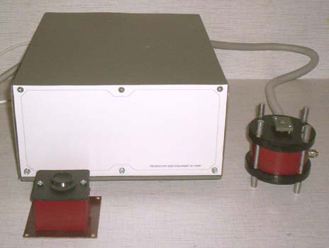
Рис. 2.3. Установка для генерации импульсных магнитных полей длительностью 10 мс с амплитудой индукции до 8 Тл.
3. Малогабаритный ИЭМ с проходным отверстием диаметром 12 мм и высотой рабочей зоны от 1 до 50 мм (амплитуда магнитной индукции в рабочей зоне до 10 Тл)
Для получения как одиночных импульсов, так и серий импульсов магнитного поля с переменной полярностью сконструирован похожий ИЭМ с соленоидом несколько больших размеров и индуктивности. ИЭМ имеет проходное отверстие диаметром 12 мм, в которое могут быть вставлены с использованием прокладок полюсные наконечники. Рабочая зона ИЭМ может иметь высоту от 1 мм (полюсные наконечники установлены без прокладок) до 50 мм (полюсные наконечники отсутствуют). Внешний вид ИЭМ показан на рис. 3.1. Габариты ИЭМ: ширина не более 105 мм, высота не более 130 мм, глубина не более 140 мм. Масса ИЭМ не более 3.5 кг. На рис. 3.2 показана установка в комплекте с емкостным накопителем энергии 4 кДж 900 В [10] для генерации импульсов магнитного поля заданной полярности с амплитудой индукции до 10 Тл (при использовании двух полюсных наконечников). При использовании емкостного накопителя энергии 8 кДж 900 В амплитуда магнитной индукции в рабочей зоне увеличивается примерно на 25 ... 30 %, также увеличивается и длительность импульса. Форма импульса магнитной индукции в центре ИЭМ без полюсных наконечников при работе с емкостным накопителем 4 кДж 900 В при полном заряде, измеренная с помощью импульсного тесламетра [7], с подключенным к выходу осциллографом UTD2102CEL-R, показана на рис. 3.3.
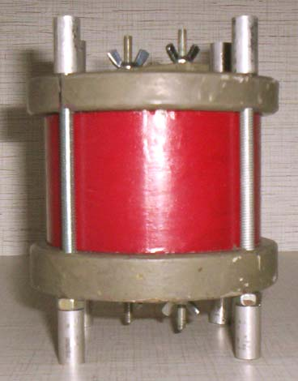
Рис. 3.1. ИЭМ с проходным отверстием диаметром 12 мм и высотой рабочей зоны от 1 до 50 мм для генерации серий импульсов магнитного поля переменной полярностью с амплитудой индукции до 10 Тл (внешний вид).
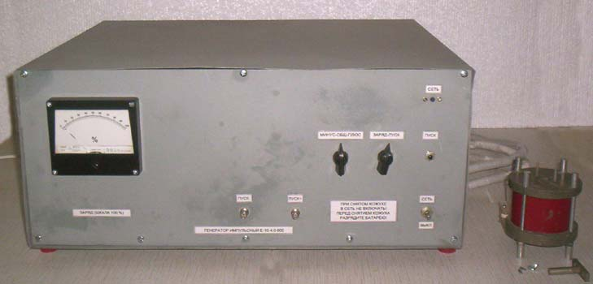
Рис. 3.2. Установка для генерации импульсов магнитного поля заданной полярности длительностью примерно 10 мс с амплитудой индукции до 10 Тл.
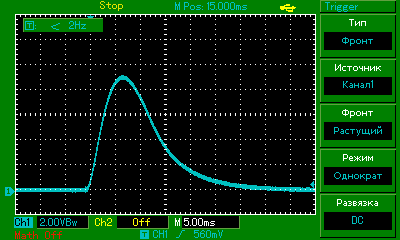
Рис. 3.3. Форма импульса магнитной индукции в центре рабочей зоны ИЭМ без полюсных наконечников при максимальном заряде емкостного накопителя энергии 4 кДж 900 В: цена деления по вертикали 2 Тл/дел., по горизонтали - 5 мс/дел. Амплитуда магнитной индукции примерно 9 Тл.
На рис. 3.4 представлена установка в комплекте с биполярным генератором мощных импульсов тока [8], позволяющая получать серию импульсов магнитного поля переменной полярности с амплитудой индукции до 6 Тл.
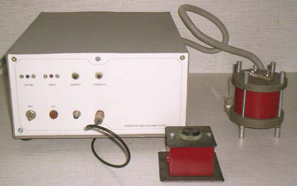
Рис. 3.4. Установка для генерации серий импульсов магнитного поля переменной полярности длительностью 10 мс каждый с амплитудой индукции до 6 Тл.
4. Малогабаритный ИЭМ с проходным отверстием диаметром 10 мм и высотой рабочей зоны от 1 до 40 мм (амплитуда магнитной индукции в рабочей зоне до 10 Тл)
ИЭМ аналогичной конструкции, но уменьшенных габаритов, был сконструирован для проведения исследований электромагнитных приводов и ускорителей, а также испытаний и магнитной обработки различных материалов. Внешний вид ИЭМ показан на рис. 4.1.
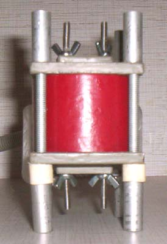
Рис. 4.1. ИЭМ с проходным отверстием диаметром 10 мм для генерации импульсных магнитных полей длительностью до 10 мс с амплитудой индукции до 10 Тл (внешний вид).
Размеры рабочей зоны ИЭМ: диаметр до 10 мм, высота от 1 мм (полюсные наконечники установлены без прокладок) до 40 мм (полюсные наконечники отсутствуют). Габариты ИЭМ: высота не более 110 мм, ширина не более 70 мм, глубина не более 110 мм. Масса ИЭМ не более 1 кг.
ИЭМ использовался совместно с генераторами мощных импульсов тока [8 - 10]. Внешний вид установки в комплекте с однополярным импульсным генератором [9] показан на рис. 4.2. Эта установка позволяет получать импульсное магнитное поле длительностью 10 мс с амплитудой индукции 7.5 Тл (без полюсных наконечников), 8 Тл (один полюсной наконечник) и до 8.5 Тл (два полюсных наконечника). Максимальная частота следования импульсов: один импульс за три минуты. На рис. 4.3 представлена установка в комплекте с емкостным накопителем энергии 4 кДж 900 В [10], которая позволяет получать одиночные импульсы магнитного поля заданной полярности длительностью примерно 6 мс с амплитудой индукции до 10 Тл (без полюсных наконечников - в проходном отверстии ИЭМ). С двумя полюсными наконечниками амплитуда индукции может достигать 11 Тл. Частота следования импульсов примерно один импульс за пять - десять минут (пока соленоид ИЭМ не охладится до температуры не выше 50 0C).
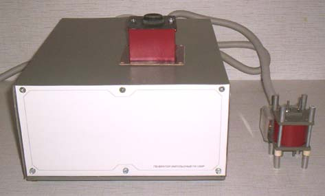
Рис. 4.2. Установка для генерации импульсных магнитных полей длительностью 10 мс с амплитудой индукции до 8.5 Тл.
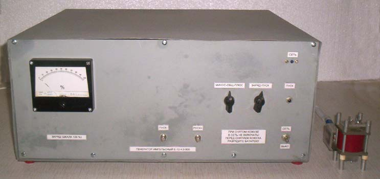
Рис. 4.3. Установка для генерации импульсов магнитного поля заданной полярности длительностью примерно 6 мс с амплитудой индукции до 11 Тл.
5. Малогабаритный ИЭМ с проходным отверстием диаметром 6 мм и высотой рабочей зоны от 1 до 20 мм (амплитуда магнитной индукции в рабочей зоне до 15 Тл)
Повысить амплитуду магнитной индукции в рабочей зоне, не увеличивая подводимую к импульсному электромагниту мощность, можно, уменьшая диаметр проходного отверстия, насколько это возможно, и его высоту. Внешний вид ИЭМ с проходным отверстием диаметром 6 мм показан на рис. 5.1. ИЭМ использовался для исследований электромагнитных приводов и ускорителей, испытаний и магнитной обработки различных материалов, а также при проведении опытов с лазерными излучателями.
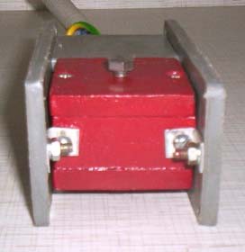
Рис. 5.1. ИЭМ с проходным отверстием диаметром 6 мм для генерации импульсных магнитных полей длительностью до 10 мс с амплитудой индукции до 15 Тл (внешний вид).
Размеры рабочей зоны ИЭМ: диаметр до 6 мм, высота от 1 до 20 мм (устанавливается с помощью полюсных наконечников). Габариты ИЭМ: высота не более 50 мм, ширина не более 65 мм, глубина не более 120 мм. Масса ИЭМ не более 0.8 кг.
ИЭМ использовался совместно с генераторами мощных импульсов тока [8 - 10]. Внешний вид установки в комплекте с однополярным импульсным генератором [9] показан на рис. 5.2. Эта установка позволяет получать импульсное магнитное поле длительностью 10 мс с амплитудой индукции 10.5 Тл (без полюсных наконечников), 11 Тл (один полюсной наконечник) и до 11.5 Тл (два полюсных наконечника). Максимальная частота следования импульсов: один импульс за три - четыре минуты. На рис. 5.3 представлена установка в комплекте с емкостным накопителем энергии 4 кДж 900 В [10], которая позволяет получать одиночные импульсы магнитного поля заданной полярности длительностью примерно 5 мс с амплитудой индукции до 15 Тл (в проходном отверстии ИЭМ без полюсных наконечников) при неполном заряде накопителя. С двумя полюсными наконечниками при полном заряде емкостного накопителя амплитуда индукции может достигать 18 Тл, но при этом ресурс ИЭМ сокращается существенно быстрее. Частота следования импульсов примерно один импульс за десять минут (пока соленоид ИЭМ не охладится до температуры не выше 30 0C).
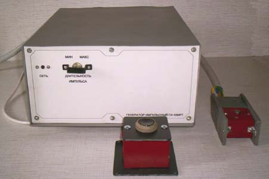
Рис. 5.2. Установка для генерации импульсных магнитных полей длительностью 10 мс с амплитудой индукции до 11.5 Тл.
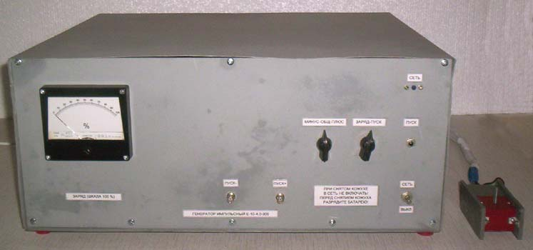
Рис. 5.3. Установка для генерации импульсов магнитного поля заданной полярности длительностью примерно 5 мс с амплитудой индукции до 15 Тл (максимально до 18 Тл).
6. Малогабаритный ИЭМ для работы в жидком азоте с проходным отверстием диаметром 16 мм и высотой рабочей зоны 50 мм (амплитуда магнитной индукции в рабочей зоне не менее 10 Тл)
Для проведения исследовательских работ в среде жидкого азота разработан ИЭМ с проходным отверстием диаметром 16 мм (рис. 6.1). ИЭМ использовался для исследований магнитных свойств материалов при низких температурах.
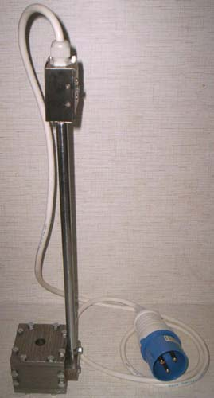
Рис. 6.1. ИЭМ с проходным отверстием диаметром 16 мм для генерации импульсных магнитных полей длительностью до 25 мс с амплитудой индукции не менее 10 Тл при температуре кипящего азота (внешний вид).
Размеры рабочей зоны ИЭМ: диаметр до 16 мм, высота до 50 мм. Габариты ИЭМ: высота не более 80 мм без трубы с выводами, ширина не более 90 мм, глубина не более 100 мм, высота трубы с выводами 500 мм. Масса ИЭМ в сборе не более 3.5 кг.
ИЭМ разработан для совместного использования с емкостным накопителем энергии 4 кДж 900 В [10], дооборудованным интерфейсом для подключения к компьютеру. Данная установка (рис. 6.2) позволяет получать импульсное магнитное поле с задаваемой полярностью длительностью примерно 25 мс с амплитудой индукции до 10 Тл и выше (при температуре кипящего азота - около 77 K (-196 0C)). Форма импульса магнитного поля, измеренная при комнатной температуре с помощью импульсного тесламетра [5], к выходу которого был подключен осциллограф UTD2102CEL-R, показана на рис. 6.3. Характеристики импульса соответствуют расчетным. При температуре кипящего азота амплитуда магнитной индукции будет больше примерно в полтора раза, длительность импульса также увеличится примерно в полтора раза.
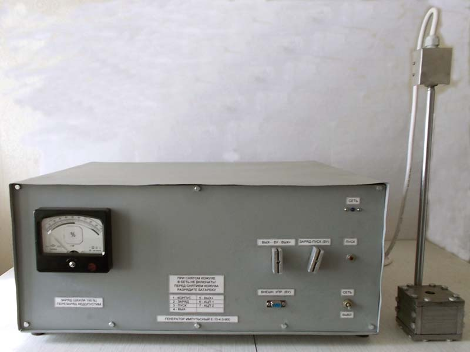
Рис. 6.2. Установка для генерации импульсов магнитного поля заданной полярности длительностью примерно до 25 мс с амплитудой индукции до 10 Тл и выше (при температуре кипящего азота).
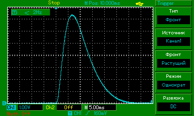
Рис. 6.3. Форма импульса магнитной индукции в центре рабочей зоны ИЭМ при комнатной температуре при максимальном заряде емкостного накопителя энергии 4 кДж 900 В: цена деления по вертикали 1 Тл/дел., по горизонтали - 5 мс/дел. Амплитуда магнитной индукции примерно 7.4 Тл.
7. Импульсный двухкатушечный индуктор в конфигурации системы катушек Гельмгольца с двухкоординатным доступом в зону однородного магнитного поля
В некоторых опытах при проведении измерений необходим как осевой, так и радиальный доступ в рабочую зону. Для этих целей может использоваться индуктор, состоящий из двух катушек Гельмгольца с внешним магнитопроводом [13] (см. рис. 7.1). Он имеет проходное отверстие диаметром не менее 20 мм и боковые окна сечением 10 х 40 мм2.
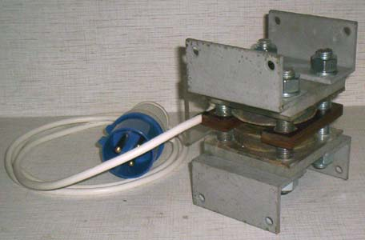
Рис. 7.1. Внешний вид импульсного двухкатушечного индуктора.
В комплекте с емкостным накопителем энергии 16 кДж 1800 В [10] позволяет получать в рабочей зоне диаметром 10 мм высотой 10 мм импульсное однородное магнитное поле с амплитудой индукции не менее 7 Тл. Неоднородность магнитного поля в рабочей зоне не превышает 0.5 %. Внешний вид установки приведен на рис. 7.2. Форма импульса магнитного поля с амплитудой индукции 7.1 Тл, измеренная с помощью импульсного тесламетра [7] с подключенным к его выходу "1 В/Тл" осциллографом DSO2D15, показана на рис. 7.3. Перегрев обмоток индуктора при однократном импульсе тока от полностью заряженного емкостного накопителя 16 кДж 1800 В не превышает 50 0C.
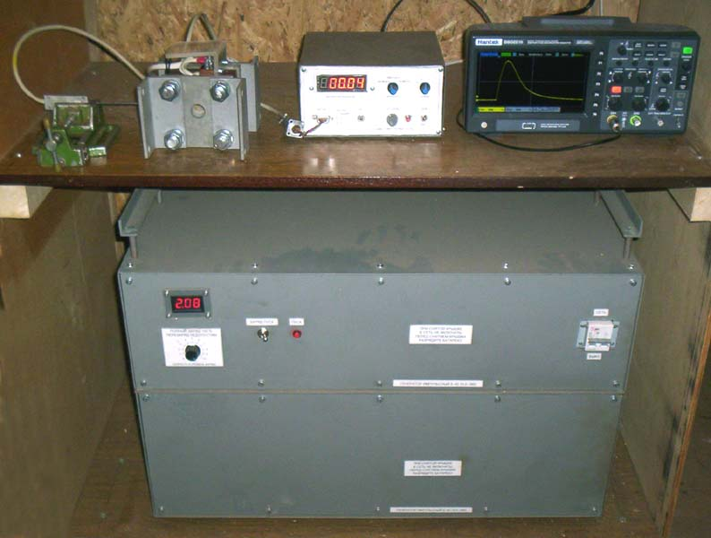
Рис. 7.2. Импульсный двухкатушечный индуктор в комплекте с емкостным накопителем 16 кДж 1800 В.
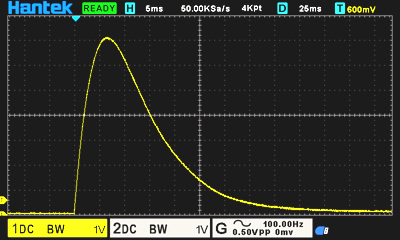
Рис. 7.3. Форма импульса магнитной индукции в центре рабочей зоны индуктора при подключении к емкостному накопителю энергии 16 кДж 1800 В: цена деления по вертикали 1 Тл/дел., цена деления по горизонтали 5 мс/дел. Амплитуда магнитной индукции 7.1 Тл.
8. Общие замечания
Измерения амплитуды магнитной индукции в установках производились с помощью импульсного тесламетра [7], к выходу которого подключался цифровой вольтметр и, при необходимости, осциллограф (для контроля формы импульса магнитного поля). В случае превышения амплитуды сигнала рабочего диапазона тесламетра пиковый вольтметр или осциллограф подключался непосредственно к выводам датчика Холла (на вход тесламетра). Также достаточно точные результаты при измерении индукции импульсных магнитных полей получены с помощью измерительных катушек с интеграторами [12], причем при использовании простого RC-интегратора практически нет ограничений по амплитуде измеряемой магнитной индукции.
Для расчета характеристик соленоидов ИЭМ и параметров импульсов тока и магнитного поля использовались программы Coil [2], dTWire [3] и UNI [6].
Импульсные электромагниты вышеприведенных конструкций позволяют многократно генерировать импульсные магнитные поля с амплитудой индукции до 10 ... 15 Тл (и даже выше) и длительностью до 10 ... 30 мс. Максимальные значения магнитной индукции могут быть получены при использовании в качестве импульсного генератора емкостного накопителя энергии [10] с подходящими параметрами.
При работе необходимо контролировать температуру обмотки ИЭМ, например, внутри проходного отверстия наощупь, с помощью датчика температуры или тепловизором, чтобы не допустить перегрева обмотки выше предела термостойкости изоляции обмоточного провода.
Существенно увеличить амплитуду индукции и длительность импульса при генерации импульсного магнитного поля можно за счет предварительного охлаждения обмотки импульсного электромагнита (катушки). Наилучшие результаты при сравнительно невысоких затратах получаются при использовании жидкого азота, который, к тому же, позволяет быстро охлаждать обмотку после прохождения импульса тока и, соответственно, повышать производительность работы. Но даже охлаждение в морозильной камере обычного бытового холодильника примерно до -18 0C даст неплохую прибавку. Дополнительным преимуществом предварительного охлаждения является увеличение запаса по перегреву обмотки в диапазоне от начальной рабочей температуры до предельно допустимой температуры изоляции.
На витки катушки при прохождении тока действуют механические силы, которые сжимают катушку в осевом направлении и растягивают ее в радиальном. Механическое давление при этом пропорционально квадрату магнитной индукции создаваемого катушкой поля. Коэффициент пропорциональности примерно равен 4 атм/Тл2 (0.4 МПа/Тл2) [1]. При генерации магнитных полей с амплитудой индукции 10 ... 20 Тл механические давления внутри катушки могут достигать 400 ... 1600 атм, что не является серьезной проблемой при ее надлежащем изготовлении. Уровень амплитуды магнитной индукции 50 Тл, соответствующий давлениям порядка 10000 атм (1 ГПа), может считаться границей для многовитковых обмоток, при переходе через которую начинают существенную роль играть проблемы, связанные с их деформацией и ускорением сокращения ресурса работы [4, 5]. А генерация магнитных полей с амплитудой индукции 100 Тл и более возможна только с помощью одноразовых катушек, которые необратимо разрушаются после одиночного импульса тока.
9. Соотношение между напряженностью и индукцией магнитного поля
В вакууме или воздухе:

(в системе единиц СИ)
где H – напряженность магнитного поля,
B – индукция магнитного поля, m0 = 4p
∙ 10-7 В ∙ сек/А ∙ м = 4p ∙ 10-7 Гн/м – магнитная постоянная [11].
| Индукция , Тл (система СИ) |
Индукция, кГс (система СГС) |
Напряженность, МА/м (система СИ) |
Напряженность, кЭ (система СГС) |
| 1 | 10 | 0.796 | 10 |
| 1.26 | 12.6 | 1 | 12.6 |
| 2 | 20 | 1.591 | 20 |
| 2.51 | 25.1 | 2 | 25.1 |
| 5 | 50 | 3.979 | 50 |
| 6.28 | 62.8 | 5 | 62.8 |
| 10 | 100 | 7.958 | 100 |
| 12.57 | 125.7 | 10 | 125.7 |
| 15 | 150 | 11.937 | 150 |
| 18.85 | 188.5 | 15 | 188.5 |
| 20 | 200 | 15.91 | 200 |
| 25.1 | 251 | 20 | 251 |
| 50 | 500 | 39.79 | 500 |
| 62.8 | 628 | 50 | 628 |
| 100 | 1000 | 79.58 | 1000 |
| 125.7 | 1257 | 100 | 1257 |
| 150 | 1500 | 119.37 | 1500 |
Тл - тесла, кГс - килогаусс, МА/м - мегаампер на метр, кЭ - килоэрстед.
Ссылки:
10.01.2007
14.01.2007
26.01.2007
02.02.2007
10.09.2010
28.01.2015
21.07.2015
07.07.2020
16.11.2024
16.08.2026
Альтернативные источники
энергии
Компьютеры и
Интернет
Магнитные поля
Механотронные системы
Перспективные
разработки
Электроника и
технология